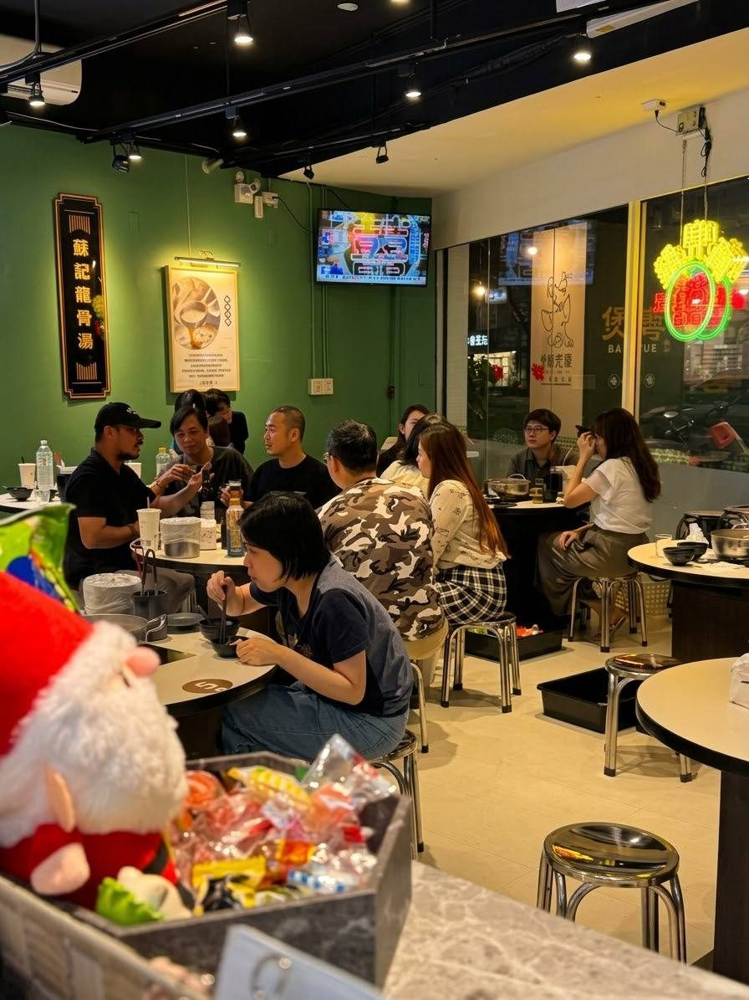
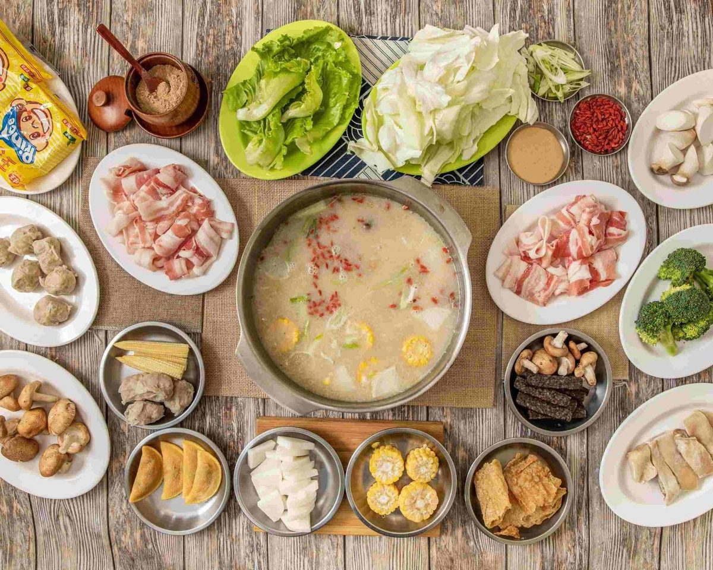
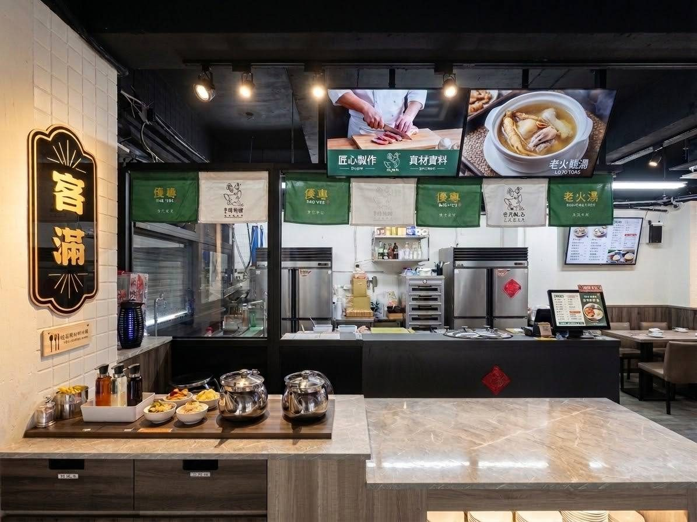
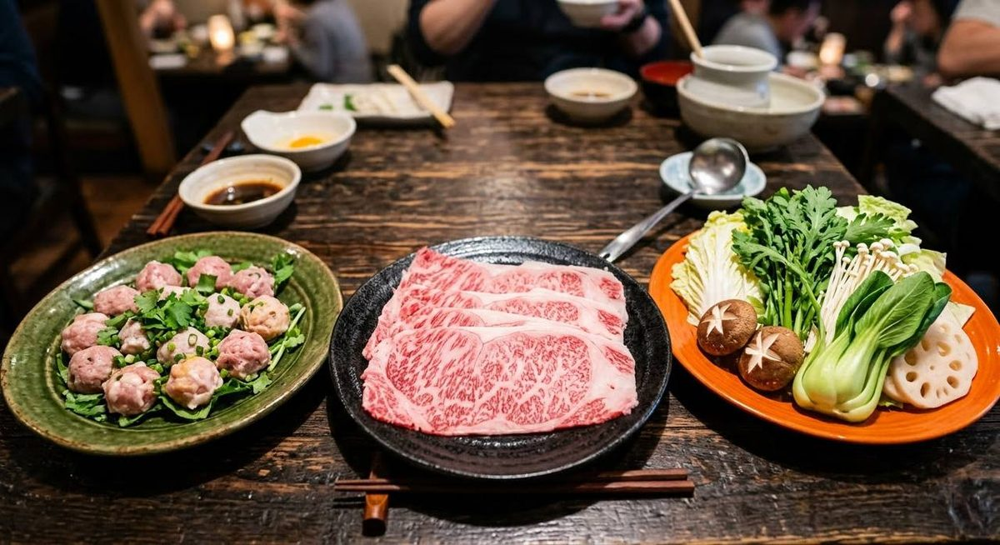

胡椒豬肚雞鍋
招牌中的招牌。白胡椒的暖香襯著龍骨湯底，豬肚脆口、雞肉軟嫩，一口入喉從胃暖到心。
GUANGDONG · PEPPER PORK-BELLY CHICKEN HOT POT
廣東粵式 · 胡椒豬肚雞火鍋
「嘀兜雞」即台語「豬肚雞」的諧音。
一鍋龍骨與藥材細火慢燉的湯，溫補去濕、不燥不上火。
DISCOVER
胡椒豬肚煲雞源自廣東客家，是客家人用來招待客人的美味珍餚，也是廣東人的家常菜。
蘇記嘀兜雞 Di Do G 創辦人遠赴廣東取經，湯頭以龍骨為底，佐以上選中藥材與多種天然辛香料，長時間細火熬煮，取其精華。
主打溫補去濕、不燥不熱，健脾養身，一年四季都適合。湯鮮、肉嫩、豬肚脆口彈牙──是我們想端到您桌上的那一鍋。
TASTEFUL
招牌中的招牌。白胡椒的暖香襯著龍骨湯底，豬肚脆口、雞肉軟嫩，一口入喉從胃暖到心。
每日新鮮熬煮的大骨湯，鮮美清爽、不油不膩，涮肉煮菜都對味。
牛五花、豬梅花肉等嚴選肉盤，油花均勻、涮幾秒即是最佳熟度。




GIFT
生日就是要熱熱鬧鬧！當月壽星來店用餐，大家為您慶生──
幾歲送幾，揪團來最有感。
※ 每桌限一位壽星優惠，優惠恕不合併使用，詳細依店內公告為準。
LOCATION
Global Mall 中和
RESERVATION
我們期盼給您最美味的鍋物與輕鬆的用餐體驗。為每位想來店的您，備上最新鮮的食材。
亦可來電訂位 02-8228-6658